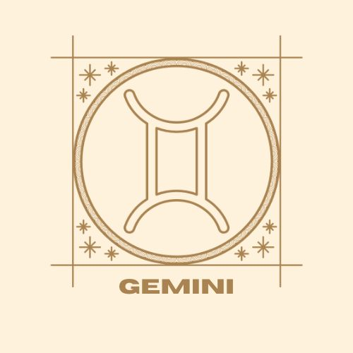
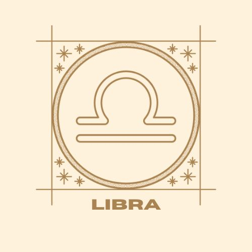
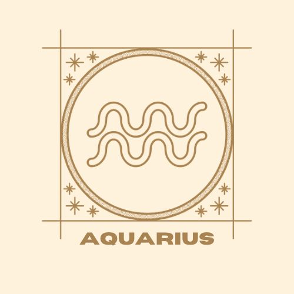

Scroll or select a sign by clicking on the images below to learn more!
  
geminiThe TwinsMay 21 - June 20Geminis are very intelligent and pick up knowledge quickly. They are perceptive, analytical, and often very funny. They have an unreserved, childlike curiosity, always asking new questions. Geminis have an uncanny ability to size up a person’s character in a matter of seconds, even if they only just met them. If someone’s bluffing, they’ll be the first to notice. They are great communicators because they tend to be very responsive and sensitive listeners. Geminis are versatile, comfortable being both introverts and extroverts. They are quick to adapt to the energy of a room–they can be the life of the party or a complete wallflower. Geminis know how to bring dissimilar people together and make them get along.
Back to top
libraThe ScalesSeptember 23 - October 23Libras are difficult to really understand because they seem so contradictory. They’re simultaneously extroverted and introverted, strategic and spontaneous, focused and intuitive. This variability makes it difficult to pin down their true character. They are an entire constellation of personalities. Libras are different depending on who they're around. This is because they value empathy and want to be receptive. They can be other people’s mirrors. While they have strong opinions about other people, it can take a long time for them to understand themselves. Libras want to be admired not for their talents but for their charm. They want to be seen as the responsible figure who can balance out the turbulent elements around them. Libras feel an intense amount of guilt and shame when they are unhappy because they know that their unhappiness affects everyone around them.
Back to top
AquariusThe Water BearerJanuary 20 - February 21Aquarians are archetypal outcasts. This doesn’t mean they’re loners. In fact, they thrive in large groups—charming you with their peculiar senses of humor, intriguing you with fun facts about the history of disposable straws, or convincing you to join their reading groups. The alienation they feel is often self-imposed—a result of their knee-jerk contrarianism, rather than a lack of social intelligence. They try to be weird. Aquarians hang grapefruit rinds from the wall and call it art, they pretend to actually like noise music, they saturate their internal monologues with SAT words. Intelligence, to them, means the ability to formulate the most unpopular opinion possible. If they were white sheep, they’d dye their wool black just to prove a point. They are destined to live their lives in direct opposition to the current world. In fact, they are world-builders. An entire universe exists in their heads, and this universe adheres to its own set of logic that doesn’t map onto reality. They aren't anarchists. They are utopians. They are not cold. They are rational. To them, emotions are just holes in their idealistic vessels. Why succumb to sensitivity when there is so much knowledge to acquire, so many problems to be solved, worlds to invent? They sometimes ask, “Why can’t I be normal?” but in reality, they find normalcy boring. They want to be unknowable. Aquarians want to evade definition. Definitions are binding little rules that other people use to restrict their movement, and they must resist anything that infringes on their freedom to drift. Between definitions, between the individual and the common, between themselves and humanity. The ultimate Aquarian struggle is resolving the tension between their need for community, and their need for complete detachment. Aquarians are always running little tests. They live their lives as one big science experiment, using the element of surprise to collect reactions and construct theories about the intricacies of human nature. They are walking abstract art pieces, shattering traditional perspectives with their complete disregard for convention. They are martyrs to the cause of humanity. Freedom is their only demand.
Back to top
|